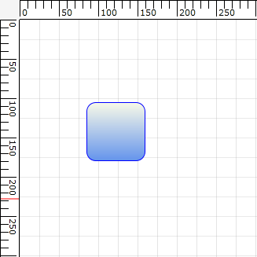
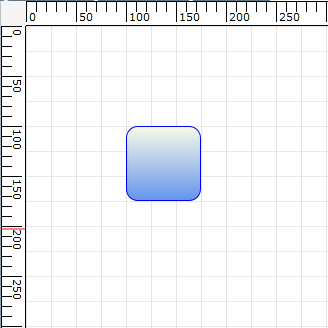

The Snap to Grid feature enables dragging nodes and connectors in multiples of offset values, which is specified by using DiagramView’s SnapOffsetX and SnapOffsetY properties. For example, if a node is dragged when SnapOffsetX is set to 25, then the nodes OffsetX value will change in multiples of 25.
Use Case Scenarios
Users can snap objects with respect to grid lines in the Design environment by using Snap to Grid instead of smooth dragging.

Figure 145: Node Before Snapping

Figure 146: Node After Snapping
Enabling Snap to Grid
The Snap to Grid feature for nodes and connectors can be enabled by setting DiagramView’s SnapToHorizontalGrid and SnapToVerticalGrid properties to ”True”, as shown in the following code snippets.
In the following code snippets, diagramView is an instance of DiagramView.
|
[XAML] <syncfusion:DiagramView x:Name="diagramView" SnapToHorizontalGrid="True" SnapToVerticalGrid="True" > </syncfusion:DiagramView> |
|
[C#] // Enable snap to vertical grid. diagramView.SnapToVerticalGrid = True;
// Enable snap to horizontal grid. diagramView.SnapToHorizontalGrid = True; |
|
[VB] 'Enable snap to vertical grid. diagramView.SnapToVerticalGrid = True
'Enable snap to horizontal grid. diagramView.SnapToHorizontalGrid = True |
Figure 147: Snap to Grid Enabled
Customizing Snap to Grid Offset Values
By default, the SnapOffsetX and SnapOffsetY values are set to 25 pixels. However, these values can be changed so that objects will snap to the horizontal grid by using SnapOffsetX and snap to the vertical grid by using SnapOffsetY, as shown in the following code snippets.
In the following code snippets, diagramView is an instance of DiagramView.
|
[XAML] <syncfusion:DiagramView x:Name="diagramView" SnapOffsetX ="50" SnapOffsetY ="50"> </syncfusion:DiagramView> |
|
[C#] diagramView.SnapOffsetX = 50; diagramView.SnapOffsetY = 50; |
|
[VB] diagramView.SnapOffsetX = 50 diagramView.SnapOffsetY = 50 |
 Note: SnapToGrid will snap objects based on the
offset values specified in DiagramView’s SnapOffsetX and SnapOffsetY values and
it works independently from grid lines. However, to snap objects along with the
grid lines, specify the same offset values for grid lines and snap
offset.
Note: SnapToGrid will snap objects based on the
offset values specified in DiagramView’s SnapOffsetX and SnapOffsetY values and
it works independently from grid lines. However, to snap objects along with the
grid lines, specify the same offset values for grid lines and snap
offset.
Also, snapping of objects will occur only when the objects are dragged during runtime. Even after snapping is enabled, users can specify their own offset values in code behind.
The properties of the Snap to Grid feature are described in the following tabulation:
Table 70: Properties Table
|
Property |
Description |
Type |
Data Type |
Reference links |
|
SnapOffsetX |
Snaps to the horizontal offset value. |
Dependency property |
double |
Not applicable |
|
SnapOffsetY |
Snaps to the vertical offset value. |
Dependency property |
double |
Not applicable |
|
SnapToHorizontalGrid
|
Enables or disables snap to horizontal grid. |
Dependency property |
bool, true/false |
Not applicable |
|
SnapToVerticalGrid
|
Enables or disables snap to vertical grid. |
Dependency property |
bool, true/false |
Not applicable |
Sample Link
To view a sample:
Open the Diagram Sample Browser from the dashboard. (Refer to the Samples and Location chapter.)
Navigate to Editable Diagram > SnapToGrid Demo.